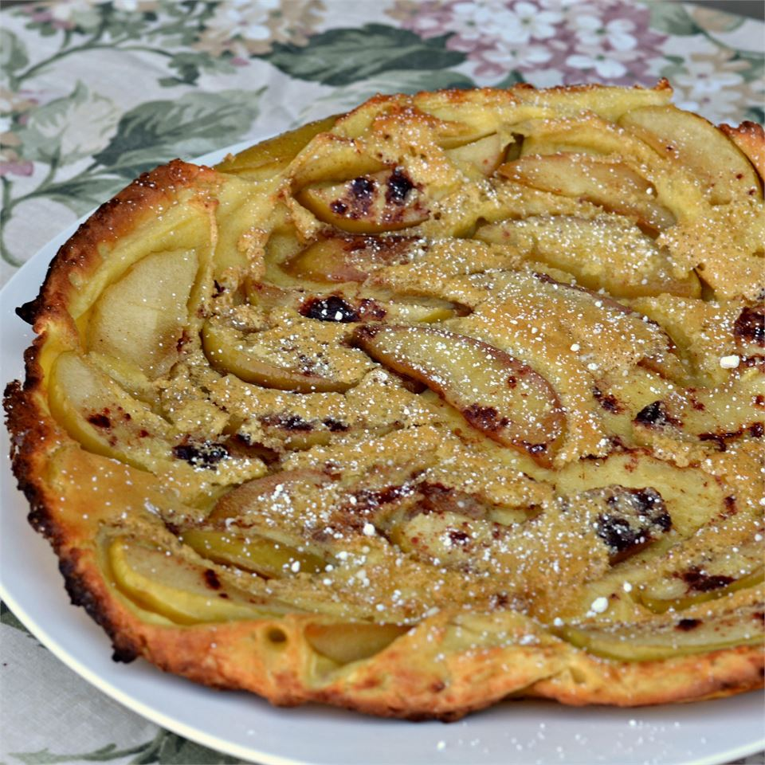

Apple Pancake Recipe

Description
A fluffy, sweet pancake with baked in apple slices. Excellent with a scoop
of vanilla ice cream.
Ingredients
- 3 tablespoons butter
- 1 large apple, cored and sliced
- 1/2 cup white sugar, divided
- 2 teaspoons ground cinnamon
- 4 eggs
- 1/3 cup milk
- 1/3 cup all-purpose flour
- 1 teaspoon baking powder
- 1 teaspoon vanilla extract
- 1 pinch salt
Steps
- Preheat oven to 400 degrees F (200 degrees C)
- Melt butter in oven-safe skillet over medium heat; cook and stir apple
slices, about 1/4 cup sugar, and cinnamon in butter until apples are tender,
about 5 minutes
- Beat eggs, milk flour, remaining 1/4 cup sugar, baking powder, vanilla extract
and salt in a large bowl until batter is smooth; pour batter evenly over apples.
- Bake in the Preheated oven until golden brown, about 10 minutes. Run a spatula
around the edges of the pancake to loosen. Invert skillet over a large plate to serve
Back to main page